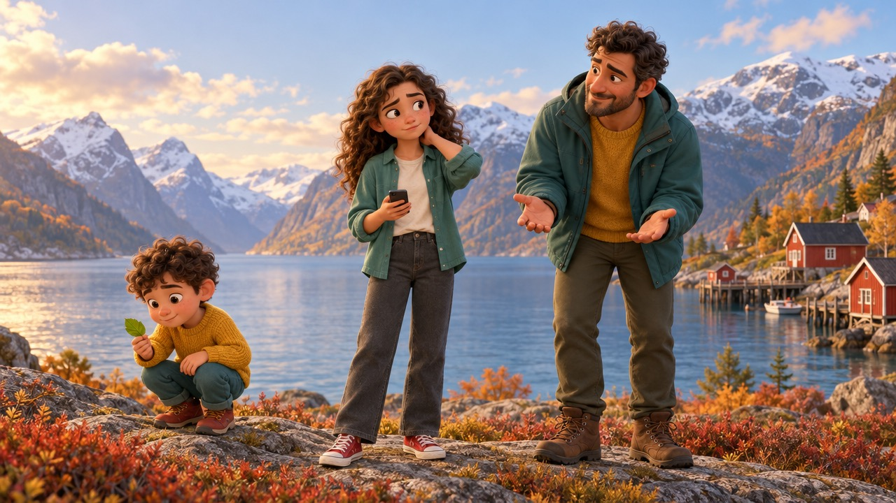
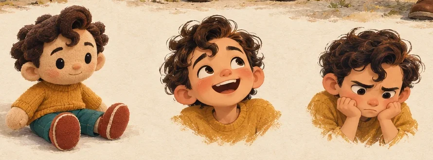
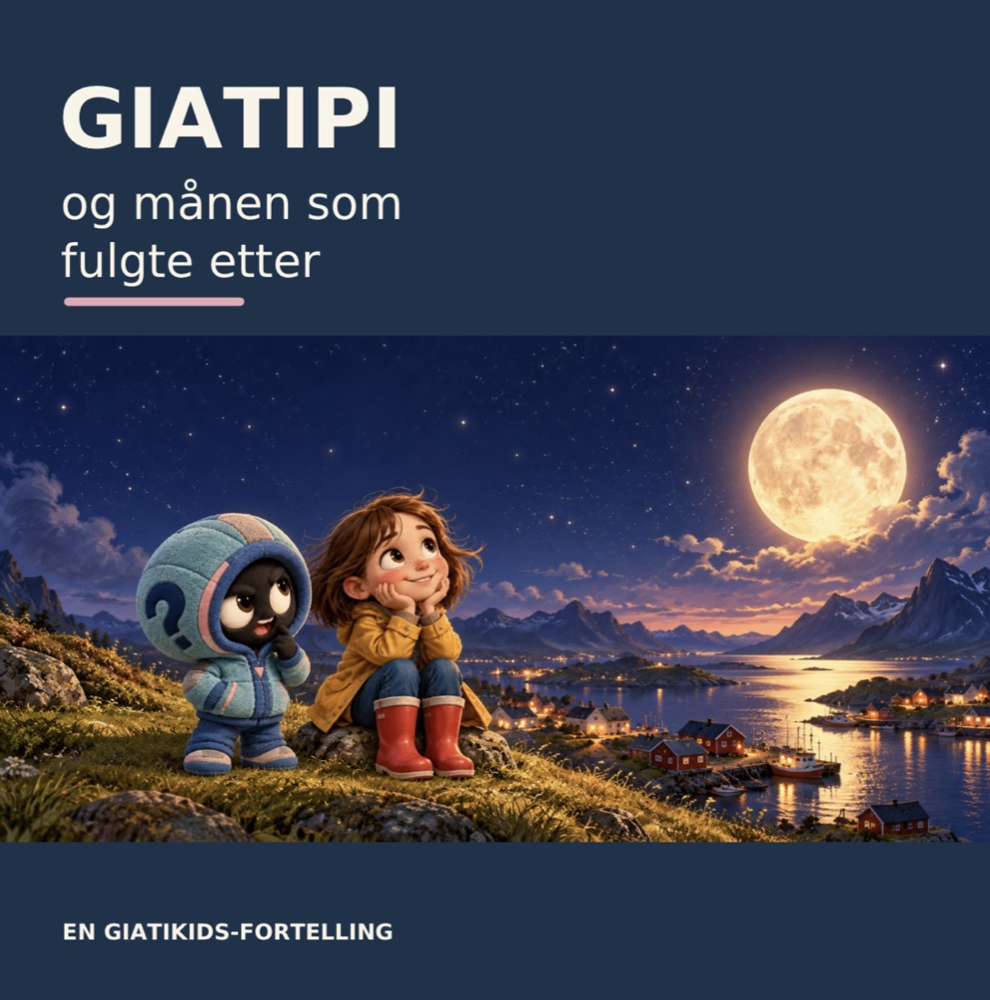
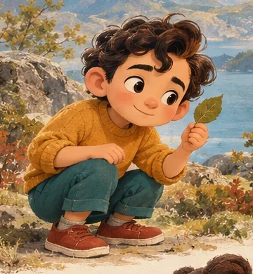
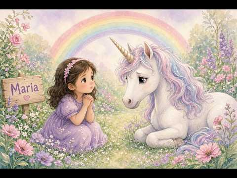

Hvorfor følger månen oss?
En bok for høytlesning, for barn på 3–5 år og de som leser for dem: Giatipi og Iben, hagen, gjemsel og månen som følger etter. Det er fortsatt et utkast.
SMÅ SPØRSMÅL. STORE VERDENER.
Giati lager filmer, bilder og bøker for barn, ungdom og voksne.
Alt starter med spørsmålet hvorfor.

FINN DIN INNGANG
Velg en linje.
Du kan alltid gå videre til en annen.
Trykte bøker og e-bøker. Vi starter med Giati og vennene.
Plakater, trykk og digitale bilder, til veggen eller skjermen.
EN MODERNE, UNDRENDE SOKRATES
Giati er en original figur født inn i vår tid, inspirert av ideen om å undersøke livet gjennom spørsmål. Han oppdager en bille som barn, møter forventninger som ungdom og utfordrer egne vaner som voksen.
Han kan ta feil. Han kan ombestemme seg. Og han får oss til å se noe vi gikk rett forbi.
«Men … hvorfor det?»Det lille spørsmålet som åpner en stor samtale.

FRA BOKSIDE TIL FAVN
Den mørke hårkrøllen, de spørrende øyenbrynene og den gule genseren følger Giati gjennom livet. Et varmt menneske med plass til alle slags følelser.
For GiatiKids begynner alt i boken. En myk Giati-dukke kan senere bli med fra lesestunden og ut i leken.
Møt Giati og vennene →Figur og fysiske produkter er under utvikling. Ingenting er til salgs.
TA MED DEG ETT SPØRSMÅL
Spør hverandre. Lytt ferdig. Undre dere litt til.
GIATIKIDS · 3–8 ÅR
Giati er en liten gutt som legger merke til ting andre går forbi. Han stiller spørsmål, og vennene hans har sine egne svar. Eller flere spørsmål.

Prøvebok · les herBøkerGiatipi og månen. Bla i boken og les sammen.Åpne → På YouTubeFilmerKorte filmer på norsk. Se dem på kanalen @GiatiKids.Se filmene →
På YouTubeFilmerKorte filmer på norsk. Se dem på kanalen @GiatiKids.Se filmene →

Han har en mørk hårkrølle, gul genser og røde sko. Han spør hvorfor. Gjerne flere ganger.
Giati fant ham i gresset. Han har ikke sagt så mye ennå, men han ser alt.
Under utviklingDet er plass til flere i fortellingene. De kommer etter hvert.
Under utviklingPRØVEBOK · IKKE TIL SALGS
Iben finner Giatipi i en blomsterpotte i hagen. Så blir de venner, og en kveld begynner månen å følge etter dem. Bla i boken «Giatipi og månen».
Boken er en trykt prøve og ikke utgitt. Bildene er laget med ChatGPT, og siden viser foreløpig bare de to første sidene med tekst. Vi prøver den ut sammen med barn i familien først.
Filmene ligger på YouTube-kanalen @GiatiKids. Trykk på en film for å se den der.
YouTube · GiatiKidsGiati og de fem epleneGiati lærer å telle fra 1 til 5, sammen med vennene.Se på YouTube ↗
YouTube · GiatiKidsMaria, Enhjørningen og RegnbuenEn fortelling om Maria, enhjørningen og regnbuen.Se på YouTube ↗Du forlater giati.no når du trykker på en film. YouTube har egne regler for personvern.
BLOGG
Her skriver vi om hvordan Giati blir til: figurene, bøkene og spørsmålene vi stiller underveis.
En bok for høytlesning, for barn på 3–5 år og de som leser for dem: Giatipi og Iben, hagen, gjemsel og månen som følger etter. Det er fortsatt et utkast.
Giati er gresk og betyr «hvorfor». Det er det minste og viktigste spørsmålet et barn stiller, og det er derfor vi valgte det som navn.
Hver film og bok følger det samme mønsteret: først et spørsmål (?), så undersøker vi sammen, og til slutt forstår vi noe nytt (!). Hos figuren Giati spretter den oransje lokken opp og blir til et utropstegn når han forstår.
Vi tror ikke et godt spørsmål er verdt mindre enn et godt svar. Derfor har vi laget et sted der det er lov å lure.
Den første boken vår handler om Giatipi, en liten, myk figur i blågrønn hettejakke med et spørsmålstegn på, og Iben, jenta som møter ham. De undrer seg over månen.
Foreløpig finnes boken bare som et trykt prøveeksemplar. Den er ikke til salgs. Tekst og bilder er laget med hjelp av KI, og vi vil si det rett ut. Du kan bla i boken her.
Vi tester den først på barn i familien, 3–5 år. Det de ler av, og det de spør om, avgjør hva vi gjør videre.
Kommer snart. Vi skriver om hva som skjer når en bok skal bli levende bilder.
OM GIATI
Giati lager filmer, bilder og bøker som vekker nysgjerrighet hos barn, ungdom og voksne.
Barnelinja har egne regler. Vi samler ikke inn data fra barn, og vi retter ikke reklame mot dem. Hele denne nettsiden bruker verken sporing eller cookies.
KONTAKT
Har du et spørsmål, en idé eller lyst til å samarbeide? Send oss en e-post.
Vi bruker e-postadressen din bare til å svare deg. Siden har ikke noe skjema, så ingenting lagres her.